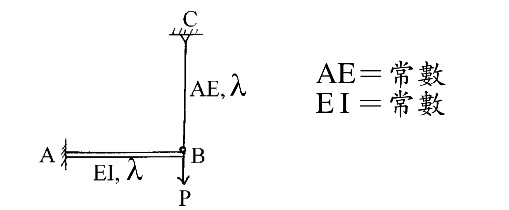
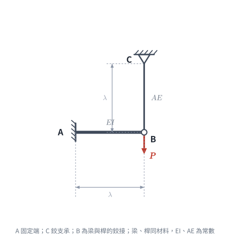

📄 題目正本（考卷原文、附圖與判讀清單；不含解法）
SA-2002-3 題目正本
本檔只記錄考卷上寫了什麼、圖上畫了什麼，不含任何解法。解析見同資料夾
SA-2002-3.md。
判讀清單經使用者確認前，狀態為「待確認」；確認後本檔原則上不再修改（改動須回考卷原圖並記 log）。
| 項目 | 內容 |
|---|---|
| 考卷 | raw/exams/SA-2002_結構學.pdf，第 1 頁（正面），第三題（無圖號） |
| 考年 | 2002（民國 91 年）專技高考結構工程技師「結構學」 |
| 配分 | 25 分 |
| 附圖 | SA-2002-3-fig-1.png、SA-2002-3-fig-2.png |
| 判讀狀態 | 已確認（2026-11-07 使用者確認；原轉錄：2026-11-07 轉錄；PyMuPDF 110 dpi 整頁＋400–1200 dpi 局部放大（向量繪圖）；盲讀於開啟解析前完成） |
1. 考卷原文（逐字）
三、如圖所示之梁，B 點用相同材料之桿吊掛。試求B 點垂直位移。（25 分）
2. 考卷給的公式、附表與參數
- 考卷沒有給任何參考公式或附表。
- 圖旁文字：AE＝常數、EI＝常數；沒有數值。
- 載重 P、長度 λ 皆為符號，沒有數值；答案應以 P、λ、EI、AE 表示。
- 考卷沒有說是否忽略梁 AB 的軸向變形、桿 BC 的彎曲（桿只標 AE）。
- 卷首注意事項：㈠可以使用電子計算器，使用電子計算器計算之試題，需詳列解答過程。㈡不必抄題，作答時請將試題題號及答案依照順序寫在試卷上，於本試題上作答者，不予計分。
- 考試時間：二小時（全一頁）。
3. 附圖

證據圖 SA-2002-3-fig-1.png

證據圖 SA-2002-3-fig-2.png（2026-11-07 自考卷重新擷取 500 dpi，無游標）
圖面文字照錄：C、AE, λ、A、EI, λ、B、P、AE＝常數、EI＝常數
4. 判讀清單
| # | 項目 | 判讀 | 圖上／題文依據 | 把握 |
|---|---|---|---|---|
| 1 | A | 固定端（左側直立剖線牆，梁端直接接牆，無三角形） | 450 dpi 放大：A 端為一條直立線加斜剖線 | 確定 |
| 2 | C | 鉸支承（三角形倒掛於上方剖線） | 450 dpi 放大：C 下方三角形頂點接桿 | 確定 |
| 3 | B | 桿與梁以鉸連接（小空心圓）；梁 AB 在 B 為自由端 | B 點小圓圈；梁不延伸過 B | 確定 |
| 4 | 梁 AB | 水平，長 λ，EI＝常數（雙線畫法） | 梁下標「EI, λ」 | 確定 |
| 5 | 桿 BC | 垂直，長 λ，AE＝常數，位於 B 正上方 | 桿旁標「AE, λ」；桿與 B 在同一鉛直線 | 確定 |
| 6 | 材料 | 梁與桿為相同材料（同一 E），I 與 A 各自為常數 | 題文「用相同材料之桿吊掛」 | 確定 |
| 7 | 載重 | B 點垂直向下 P | B 下方箭頭向下標 P | 確定 |
| 8 | 所求 | B 點垂直位移 | 題文 | 確定 |
| 9 | 考卷沒有給 | P、λ、EI、AE 的數值；梁軸向變形是否忽略 | 題文與圖 | 確定 |
| 10 | 靜不定度 | 固定 3＋鉸 2＝5 個反力、方程式 3＋B 鉸 1（桿為二力構件），一度靜不定 | 計數 | 確定（解讀）；使用者確認 |
| 11 | 證據圖 | 舊 fig-1 有滑鼠游標（圖左上空白處，未壓構件）；新增 fig-2（500 dpi，無游標） | — | 確定 |
轉錄：2026-11-07（SA-U2-2 題目正本推廣・批 1）
確認：2026-11-07 使用者確認
考題編號：[SA-2002-3]
主分類： SA-U2-2 靜不定結構分析
副分類： 無
分析法： 諧合變位法
標籤： 靜不定結構 諧合變位法 勁度法 複合結構
1. 題目（考卷原文見題目正本）
考卷原文、公式／附表、附圖與判讀清單（已確認）見
SA-2002-3-problem.md。本節只列解題時最容易讀錯的地方與本解使用的記號；題意以題目正本為準。

重繪自考卷附圖，依判讀清單重繪。攔：C 讀成固定端、B 讀成剛接、漏掉桿的軸向變形。
常見誤讀
| 項目 | 正確判讀 | 常見誤讀 |
|---|---|---|
| C 支承 | 鉸支承（三角形倒掛） | 固定端，或寫成「鉸接或固定端皆可」 |
| B 點 | 梁端與桿以鉸連接，桿為二力構件 | 梁、桿剛接 |
| 材料 | 梁與桿同材料（同一 E）；EI、AE 各為常數，無數值 | 假設 EI、AE 數值 |
本解記號： 梁 AB 長 λ、撓曲剛度 EI；桿 BC 長 λ、軸向剛度 AE；T＝桿拉力；B 點位移向下為正。
2. 考題核心精神與出題者意圖 (Core Concepts & Examiner's Intent)
- 核心觀念：複合結構（梁與軸力桿結合）的變位諧合（位移一致性）。梁承受彎矩變形，桿承受軸力變形，兩者在節點 B 處的垂直位移必須相同。
- 出題者意圖：測驗考生能否正確運用諧合變位法（力法）或節點勁度法（位移法）來解析一次靜不定結構，並理解兩者之等效關係與適用情境。
3. 解題戰略地圖與陷阱分析 (Strategic Roadmap & Trap Analysis)
- 作戰計畫：
- 方法一（諧合變位法）：將結構於 B 點切開，以吊桿張力 $T$ 為多餘力。分別寫出梁在 B 點因載重 $P$ 及多餘力 $T$ 產生的變位，以及桿因張力 $T$ 產生的伸長量，由兩者位移相等求得 $T$，再代回求 B 點位移。
- 方法二（直接勁度法）：將 B 點視為單一自由度系統（僅考慮垂直位移）。分別計算梁在 B 點的垂直抗推勁度與桿的軸向勁度，相加後以公式 $P=K_{total}\Delta$ 直接求解位移。
- 陷阱分析：
- 符號混淆：題目中長度符號使用 $\lambda$（lambda）而非慣用的 $L$，計算與書寫時需注意代數符號不要習慣性寫成 $L$ 導致閱卷者誤判。
- 剛度組合：梁的彎曲變形與 $EI$ 有關，桿的軸向變形與 $AE$ 有關，最終答案必然同時包含此二項參數。若公式推導錯誤，可能會將兩者剛度錯誤相加或量綱不對。
3.5 變數層次分析 (Variable Hierarchy Analysis)
### 最終目標
求出節點 B 在受力 P 作用下的垂直向下位移量 \Delta_B
### 本題關鍵公式（依計算順序）
- B 點的梁結構垂直抗推勁度：$K_b = \frac{3EI}{\lambda^3}$
- B 點的桿結構軸向勁度：$K_r = \frac{AE}{\lambda}$
- 總節點勁度：$\boxed{K_{total}} = K_b + K_r$
- 位移求解：$\Delta_B = \frac{P}{\boxed{K_{total}}}$
### L1：題目直接給定
| 符號 | 數值 | 說明 |
|:---|:---|:---|
| $P$ | $P$ | B 點向下集中載重 |
| $L_b$ | $\lambda$ | 梁 AB 長度 |
| $L_r$ | $\lambda$ | 桿 CB 長度 |
| $EI$ | $EI$ | 梁 AB 撓曲剛度 |
| $AE$ | $AE$ | 桿 CB 軸向剛度 |
### L2：需知識點推導
節點等效勁度
| 符號 | 公式／來源 | 卡關? |
|:---|:---|:---|
| $K_b$ | $\frac{3EI}{L_b^3}$ | |
| $K_r$ | $\frac{AE}{L_r}$ | |
| $\Delta_B$ | $\frac{P}{K_b + K_r}$ | |
### L3：深層知識（不懂就卡住）
| 知識點 | 說明 | 卡關? |
|:---|:---|:---|
| 複合結構諧合變形 | 梁的彎曲撓度與桿的軸向伸長量在交接點必須一致 | |
| 單一自由度等效勁度 | 若節點只有一個方向的變位，其勁度可視為各並聯構件之勁度相加 | |
4. 步驟化詳細計算過程 (Step-by-Step Detailed Calculation)
方法一：諧合變位法（力法）
Step 1：選擇多餘力
將結構於 B 點解開，設吊桿 CB 承受之軸向拉力為 $T$。
此拉力 $T$ 將向上作用於懸臂梁 AB 的端點 B，並向下作用於吊桿 CB 的端點 B。
Step 2：計算梁結構之 B 點變位
懸臂梁 AB 端點 B 受向下集中外力 $P$ 與向上吊桿拉力 $T$ 作用，故向下的總淨載重為 $(P - T)$。
依據懸臂梁端點受集中力之撓度公式 $\delta = \frac{FL^3}{3EI}$，
梁 AB 在 B 點的向下垂直變位為：
$$ \Delta_{B, beam} = \frac{(P - T)\lambda^3}{3EI} $$
Step 3：計算桿結構之 B 點變位
吊桿 CB 受拉力 $T$ 作用，依據軸向變形公式 $\delta = \frac{NL}{AE}$，
桿 CB 之伸長量（即 B 點向下位移）為：
$$ \Delta_{B, rod} = \frac{T\lambda}{AE} $$
Step 4：建立諧合方程式並求解多餘力
由於梁與桿在 B 點物理連接，兩者產生之變位必須一致（變位諧合條件）：
$$ \Delta_{B, beam} = \Delta_{B, rod} $$
$$ \frac{(P - T)\lambda^3}{3EI} = \frac{T\lambda}{AE} $$
將方程式兩邊同除以 $\lambda$，並將含有 $T$ 的項移至等號右邊整理：
$$ \frac{P\lambda^2}{3EI} - \frac{T\lambda^2}{3EI} = \frac{T}{AE} $$
$$ \frac{P\lambda^2}{3EI} = T \left( \frac{1}{AE} + \frac{\lambda^2}{3EI} \right) $$
通分右式括號內項目：
$$ \frac{P\lambda^2}{3EI} = T \left( \frac{3EI + AE\lambda^2}{3EI \cdot AE} \right) $$
交叉相乘解得拉力 $T$：
$$ T = \frac{P\lambda^2}{3EI} \cdot \frac{3EI \cdot AE}{3EI + AE\lambda^2} = \frac{P\lambda^2 \cdot AE}{3EI + AE\lambda^2} $$
Step 5：計算 B 點垂直位移
將 $T$ 代回桿 CB 的變形公式，可得 B 點垂直向下位移 $\Delta_B$：
$$ \Delta_B = \frac{T\lambda}{AE} = \frac{\frac{P\lambda^2 \cdot AE}{3EI + AE\lambda^2} \cdot \lambda}{AE} $$
$$ \boxed{ \Delta_B = \frac{P\lambda^3}{3EI + AE\lambda^2} } \quad (\text{向下}) $$
方法二：直接勁度法（位移法）
Step 1：建立單一自由度系統
結構僅在 B 點有未知的垂直位移 $\Delta_B$（不考慮 B 點微小轉角對軸力桿的影響），故可將 B 點視為單一自由度節點，求其總勁度 $K_{total}$。
Step 2：計算各構件對 B 點之垂直勁度
-
懸臂梁 AB 對端點垂直位移之抗推勁度（彈簧常數）：
$$ K_b = \frac{3EI}{\lambda^3} $$ -
吊桿 CB 對端點垂直位移之軸向勁度（彈簧常數）：
$$ K_r = \frac{AE}{\lambda} $$
Step 3：組裝總勁度並求解位移
兩構件在 B 點為並聯關係，總勁度 $K_{total}$ 為兩者之和：
$$ K_{total} = K_b + K_r = \frac{3EI}{\lambda^3} + \frac{AE}{\lambda} = \frac{3EI + AE\lambda^2}{\lambda^3} $$
根據力與變位關係式 $P = K_{total} \cdot \Delta_B$，可直接求得：
$$ \Delta_B = \frac{P}{K_{total}} = \frac{P}{\frac{3EI + AE\lambda^2}{\lambda^3}} $$
$$ \boxed{ \Delta_B = \frac{P\lambda^3}{3EI + AE\lambda^2} } \quad (\text{向下}) $$
5. 關鍵爭議點與進階探討 (Critical Issues & Advanced Discussion)
- 本題完美展現了力法（諧合變位法）與位移法（勁度法）的殊途同歸。對於單一節點自由度的複合結構，使用位移法（直接相加勁度）通常較為直觀且不易計算錯誤。
- 在考場上，若題目未指定分析方法，強烈建議使用直接勁度法（方法二）秒殺此題，但也可將諧合變位法（方法一）列出作為驗算工具，確保滿分萬無一失。
- 需再次提醒，題目給的長度符號為 $\lambda$。遇到非慣用符號時，應仔細對應量綱與單位，例如 $EI/\lambda^3$ 與 $AE/\lambda$ 兩者量綱皆為「力量/長度」，確認單位一致無誤後即可放心作答。
修正日期：2026-11-07（§1 改為指向題目正本並放重繪附圖（figs/SA-2002-3-fig-1-problem.svg）、加常見誤讀、刪除「C 點鉸接或固定端皆可」的保留語（考卷為鉸支承）；圖由 gen_SA-2002-3.py 產生，可重跑）